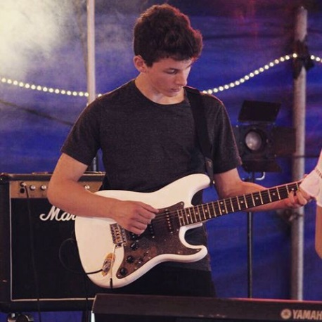
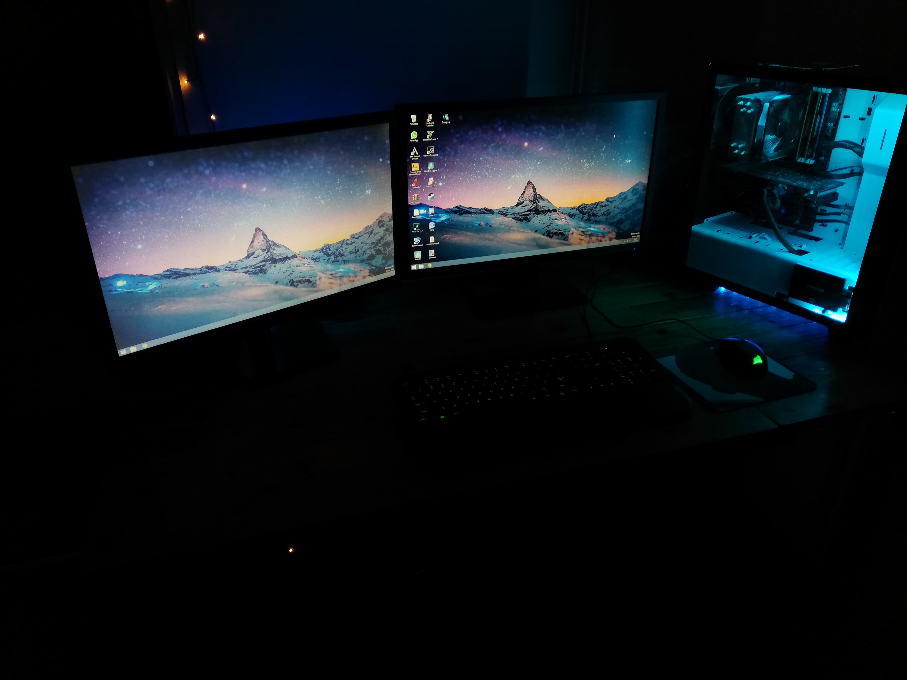
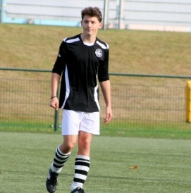
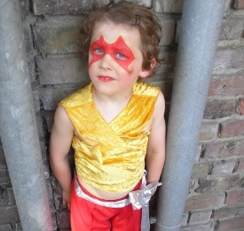
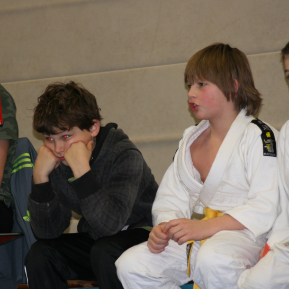
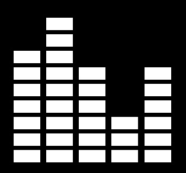
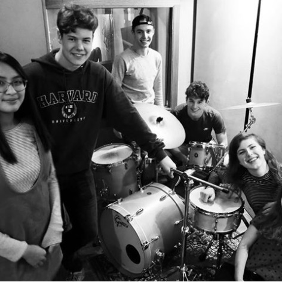
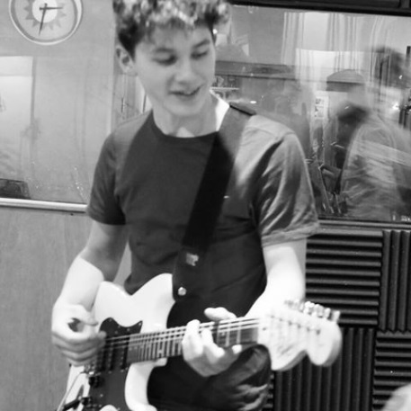
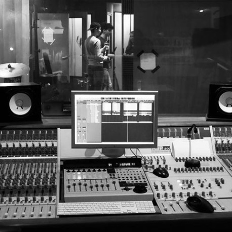
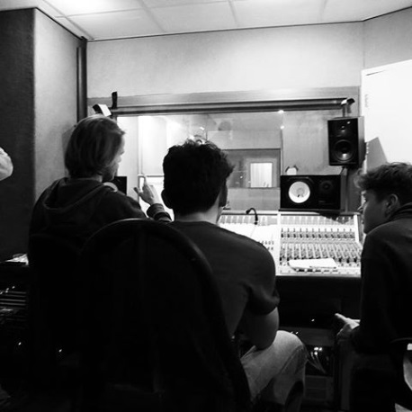

Inju Michorius
Inleiding
Hallo! Mijn naam is Inju, afgeleid van de combinatie van mijn ouders namen (Inge en Jurgen). Ik ben geboren en getogen in Arnhem en ik woon daar nu al 17 jaar. Ik heb een broertje van 12 die Kato heet.
School & Werk
Ik heb in 2018 mijn Havo diploma gehaald op het MCA. Vervolgens ben ik na meerdere open dagen bij het HvA terecht gekomen, waar ik CMD volg. Ik heb digitale dingen al sinds jongs af aan interessant gevonden, en ik was ook erg creatief.
Ik begon op mijn vijftiende met werken bij de McDonalds (wat ik nu nog steeds doe), en ben sinds kort begonnen met noten verkopen op een notenkraam. Werken bij McDonalds doe ik zo’n twee keer per week en bij de Nootkracht werk ik elke zaterdag.
Hobby’s
Zoals ik al zei ben ik erg creatief, ik tekende vroeger veel en ik vond knutselen leuk. Ook heb ik in 2016 mijn eigen computer gebouwd. Hier ben ik nog steeds veel mee bezig, want naar mijn mening kan een computer altijd beter. Ik help daarom ook vrienden met het bouwen van een pc omdat zelf bouwen goedkoper is dan kant-en-klaar kopen. Sporten is ook een van de dingen die ik graag doe. Ik heb vroeger op Judo gezeten tot ik de blauwe band had en ben daarna over gegaan naar voetbal. Voetbal heb ik het langst gedaan, vooral omdat ik in een vriendenteam terecht kwam. Als ik erop terugkijk past een vechtsport beter bij me, maar ik heb leuke tijden en wedstrijden gehad toen ik nog op voetbal zat. Ik heb een poosje in plaats van voetbal rugby geprobeerd, maar ben al snel weer teruggegaan naar voetbal. Ook heb ik toen ik heel jong was bij een circus gezeten, waar ik bij verschillende voorstellingen aan heb meegedaan. Ik heb na het circus nog 4 jaar op scouting gezeten voordat ik ging judoën.
Pc Building
  
Tegenwoordig houd ik me vooral bezig met hardlopen. Mijn doel is om op mijn achttiende een marathon te lopen. Ik loop meestal vijf keer in de week vijf kilometer of meer hard. Soms loop ik drie keer in de week negen kilometer.
Muziek
Ten slotte vermaak ik mijzelf met muziek maken. Ik ben een enorme fan van verschillende soorten genres: van LoFi hiphop tot metal. Ik speel al 5 jaar gitaar, eerst akoestisch en later ook elektrisch. Ook zit ik in een band genaamd Unwind. Daar zit ik nu ongeveer een jaar bij. We coveren rock, pop en alternatieve muziek en we plannen nog om onze eigen muziek te gaan maken. Ik ben bezig om mezelf piano aan te leren en ik heb pasgeleden een basgitaar gekocht.
   